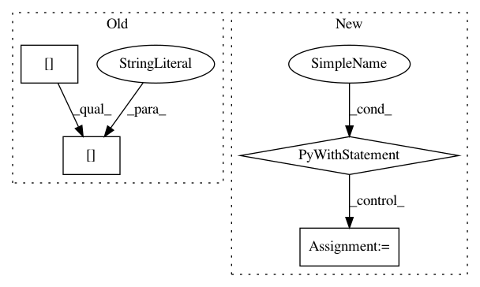

86edb86bfadfaea0f7925a09e4473258ae82f9f7,txtgen/modules/decoders/rnn_decoders.py,AttentionRNNDecoder,__init__,#AttentionRNNDecoder#Any#Any#Any#Any#Any#Any#Any#Any#Any#Any#,268
Before Change
//TODO(zhiting)
att_params = hparams["attention"]
attention_class = hparams["attention"]["class"] //LuongAttention
attention_kwargs = hparams["attention"]["params"]
attention_kwargs["num_units"] = n_hidden
attention_kwargs["memory_sequence_length"] = attention_values_length
attention_kwargs["memory"] = attention_keys
attention_modules = ["txtgen.custom", "tensorflow.contrib.seq2seq"]
After Change
attn_modules = ["txtgen.custom", "tensorflow.contrib.seq2seq"]
// Use variable_scope to ensure all trainable variables created in
// the attention mechanism are collected
with tf.variable_scope(self.variable_scope):
attention_mechanism = get_instance(
attn_hparams["type"], attn_kwargs, attn_modules)
atten_cell_kwargs = {
"attention_layer_size": attn_hparams["attention_layer_size"],
"alignment_history": attn_hparams["alignment_history"],
"output_attention": attn_hparams["output_attention"],
In pattern: SUPERPATTERN
Frequency: 3
Non-data size: 4
Instances
Project Name: asyml/texar
Commit Name: 86edb86bfadfaea0f7925a09e4473258ae82f9f7
Time: 2017-10-24
Author: zhitinghu@gmail.com
File Name: txtgen/modules/decoders/rnn_decoders.py
Class Name: AttentionRNNDecoder
Method Name: __init__
Project Name: catalyst-team/catalyst
Commit Name: aab3902d4a7d55f5a86058854adc36b8a12c873f
Time: 2019-05-20
Author: ekhvedchenya@gmail.com
File Name: catalyst/dl/callbacks/base.py
Class Name: OptimizerCallback
Method Name: on_batch_end
Project Name: deepmipt/DeepPavlov
Commit Name: 8261994bf8f77251f0b22fb13fa490ffa0bd184b
Time: 2018-02-01
Author: yoptar@gmail.com
File Name: deeppavlov/core/data/utils.py
Class Name:
Method Name: ungzip